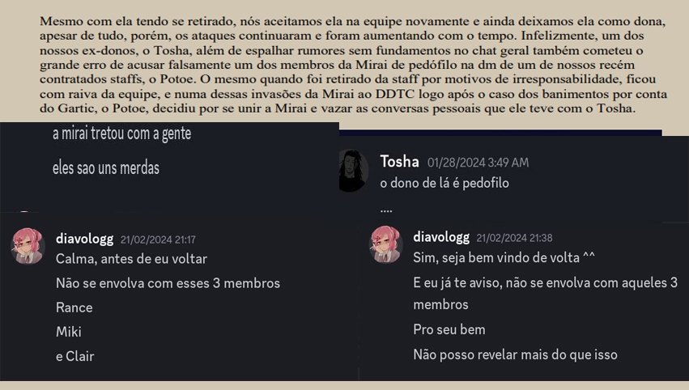

Heya, Miki aqui.
É, infelizmente li aquele pdf mal-feito pelo Barão Luke, vamos para o primeiro ponto, é completamente mentira que a ideia partiu do Onix ou Tosha, os únicos convidados para o projeto idealizado e montando por mim, foram a antiga dona e o Onix, pela confiança que tinha neles, o próprio Tosha que foi convidado do Onix assume que deu um golpe na antiga dona para que fosse passada a coroa do servidor, sobre o ocorrido da antiga dona, acho bem justo, mas não atacamos eles, fui ao servidor saber do ocorrido quem quiser ler, tá lá, após saber disso, até fiquei meio chateado pela minha amiga, mas apenas conversei com o Onix sobre o ocorrido, após saber da palhaçada de vocês xingando a gente e por algum motivo querendo upar nossas traduções no servidor de vocês sem mais nem menos, fomos resolver o problema, mas foi tão difícil do grandioso Tosholas aparecer, que ficamos lá esperando e questionando mas claro, o Luke com embasamento e prints não relacionadas a nós, sabe de tudo, nunca houve menção alguma de raid da nossa parte.
E lá vai o Sir Luke sem contexto de novo, pois é, chegou no nosso conhecimento o que mesmo? Há sim, que seu Staff, que nem uma semana tinha na época, tava espalhando murmurinhos da gente staff esse que permaneceu no cargo firme e forte, mesmo fazendo merda atrás de merda, como intimidar uma pessoa fragilizada no chat de DESABAFOS, mas enfim, quem sou pra tá falando né, sobre o potoe, um dos poucos staffs decentes que passou por lá, é estranho que o servidor de 4 meses tenha tantos problemas assim ou tantos ex-staffs, mas apenas comentou comigo as injustiça sofridas lá inclusive quis entender melhor já que como resposta final deles era banir a gente e ocultar isso, explicamos todo o ocorrido e ele falou o que o dono deles dizia do Rance, atitude que o Luke reprova afinal se te acusam de um crime desses que coloca em risco sua vida, você se cala e espera o pior acontecer, mesmo TODOS cientes, não houve pronunciamento, já que não foi só pro Potoe e Kay sabia disso, então é bem suposto que o Diavologg estivesse falando isso por ai, o que me leva, essas duas prints dele são de membros normais que ao receber essa mensagem comentaram com o Rance nada suspeito devo dizer, então no fim das contas era mais do que necessário o pronuciamento vindo da Mirai, afinal quem se cala diante dessas acusações?
Dito pelo Supremo absoluto senhor Bobalhão ou Luke como chamam, tentaram diversas vezes resolver como adultos, porém quando se desculparam e atenderam nosso pedido, foi apagado, podem olhar nos anuncios descobriram com o acordo e nosso nome continua sendo jogado na lama até nos dias de hoje, pelos membros de sua própria equipe, tendo isso em vista, apenas espelhei, mas como ele disse, somos insignificantes mas até hoje eles tão de olho no nosso querido servidor, afinal sabem de tudo que rola, inclusive respondendo na base do álcool nosso pronunciamento, estou vendo Luke, o quanto vocês não se importam kkkk é o que eu digo por ai, o alcoolismo é um problema enorme da humanidade, só explicando, pois duvido da sua capacidade, só tô zoando, mas sei que bebeu enquanto fazia esse documento isso explica o motivo de parecer feito nas coxas, mas duvido que faria melhor em condições decentes.
Não, nunca mesmo, vocês nunca falaram da gente né, imagina o que falavam no chat da staff, talvez esse compilado te lembre melhor Suprema Deidade Luke, mas te lembrando melhor das coisas foi no dia seguinte, não no dia do gartic, que por sinal, é sério mesmo que vocês acham que um jogo para ADULTOS, seja um tema bom para crianças? Enfim, nosso banimento foi em base de porra nenhuma conversamos normalmente nesse dia, falamosde diversas coisas, até que o Tosha se irritou e mandou você ir latindo pra gente, apenas questionamos vocês e do nada começaram com um monte de merda então continuamos sua discussão, afinal, nem fazia sentido seu aviso rídiculo, teu dono pode espalhar acusações por ai, mas a gente não pode rebater vocês? Tanto que os logs foram apagados, mensagens do saídas apagadas pois configurei para diferenciar saída e banimento/expulsão, se fosse mesmo por a gente ter feito algo, estaria no log de punições, apagaram por a comunidade ter se divertido e não gostaram da nossa popularidade lá tanto que seu staff ficou espalhando mentiras, não foi? Poxa, quem diria que vocês iriam MENTIR de novo.
Sim, raramente eles erram mesmo, só rolou ontem e depois foi apagado para depois justificarem melhor a opressão deles, simplesmente não se pode fazer nenhuma piada lá mesmo que seja com tag ou não, vai da avaliação dos grandes adms que não erram, afinal de contas, espalhar mentiras por ai, é supernormal e toda pessoa decente anda por ai praticando, então realmente, nunca erraram, só quase toda vida, não é a primeira e nem vai ser a última punição ridícula ou exagerada por cima de PIADAS, que eu lembre bem só quem intimidava pessoas por isso era governos ditadores e opressores, mas do que eu sei perante a grande equipe que eu criei e se tornou a maior falha do meu legado na internet.
Chega a ser engraçado como simplesmente eles querem tanto ter um servidor em um jogo para maiores de 18 anos para um público entre 13-17 anos vão lá e criam suas regras, na qual só seguem quando convém e quando não convém, a putaria é liberada, na época que fomos banidos, o Sir Luke deu um aviso pelo Rance ter dito apenas pinto Mas pelo jeito só é válido para ele e mais ninguém, já que é fácil notar que o chat geral deles é putaria atrás de putaria, e como dito pelo moderador deles, a comunidade em si é para menores de idade nem a steam concorda com o argumento falho dele, tá presente no próprio jogo os avisos sobre conversas com conotação sexual, violência que claramente beira a gore, suicídio e mutilação, coisas que claramente não são para crianças e não precisa ser um gênio para saber que não é apropriado para pessoas que podem se horrorizar fácil com coisas assim ou que não deveria ter discussões a respeito disso, muito me admira eles criando um lugar para a criançada com mod como Natsuki and Chill ou os demais que tratam sobre suicídios de forma banal, aos menos tomem vergonha sobre a hipocrisia criada por vocês.